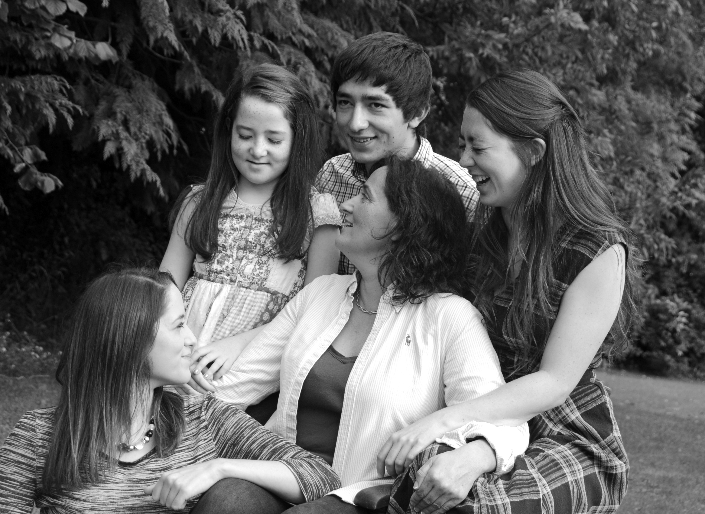

Here's where you can read about our school and find out more about us. We're a very musical famiy as you can see further down, from little Saoirse at age 9 to mammy Deenie, a good bit older than age 9!
Musicland - Classes
We offer instrumental lessons in Piano, Violin and Guitar and musicianship and theory classes.
The Musicianship classes are for kids aged 0 to 8 years old. The children we teach usually start on an instrument at age six. We also offer lessons to older children but this usually requires that the child completes a few months of musicianship classes first.
Musicland - The Gang
Róisín: I play Piano and Saxaphone. I just completed my Masters in Mathematics but I am currently taking a break to check in on the kids in Musicland. I assist for the musicianship classes and also teach piano. I am particularly interested in finding effective ways to teach music theory to young children.
Áine: My degree is in music and anthropology. I am currently doing a year in Abu Dhabi teaching music in primary school. Before this I taught piano for musicland and assisted in the musicianship classes. I particularly enjoy working with very young children and children with special needs and I am developing an interest in Music Therapy.
Saoirse: I am in third class, I play violin, harp and piano. My favorite thing to do is to act and sing in musicals!